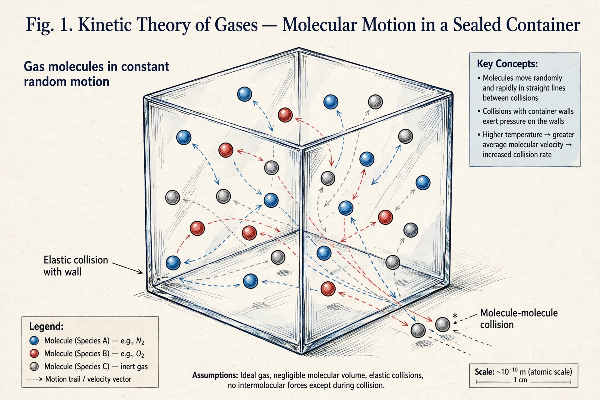

The kinetic theory of gases is a simple classical model of the thermodynamic behaviour of gases. It treats a gas as a large number of identical submicroscopic particles (atoms or molecules) in constant, rapid, random motion. The theory explains macroscopic properties such as pressure, temperature, and viscosity in terms of the particles' collisions with each other and with the walls of the container.
The classic model assumes the particles are point-like with negligible volume, exert no forces on one another except during elastic collisions, and obey Newton's laws of motion. From these assumptions one derives the pressure relation:
P = (1/3) ρ ⟨c²⟩
and connects temperature to mean translational kinetic energy:
⟨Ek⟩ = (3/2) kB T
Daniel Bernoulli proposed a kinetic explanation of gas pressure in his Hydrodynamica (1738), but the theory was developed mainly in the 19th century by Rudolf Clausius, who introduced the mean free path (1857), and James Clerk Maxwell, who derived the distribution of molecular speeds (1860). Ludwig Boltzmann generalised Maxwell's work in 1871, founding statistical mechanics.
The theory yields the ideal gas law, the Maxwell–Boltzmann distribution of speeds, and expressions for transport properties — diffusion, viscosity, and thermal conductivity — as well as the equipartition theorem governing how energy is shared among degrees of freedom.
Statistical mechanics · Brownian motion · Mean free path · Thermodynamics